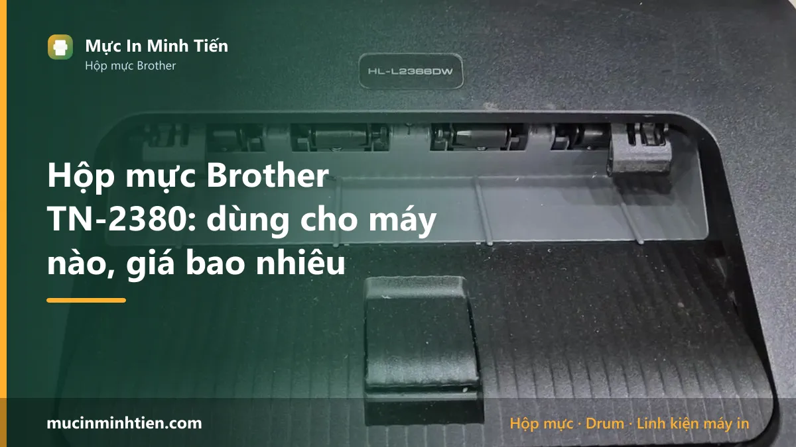
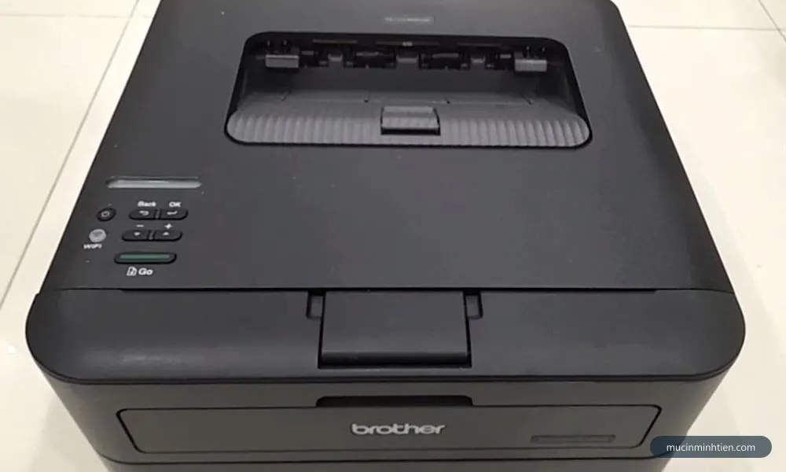
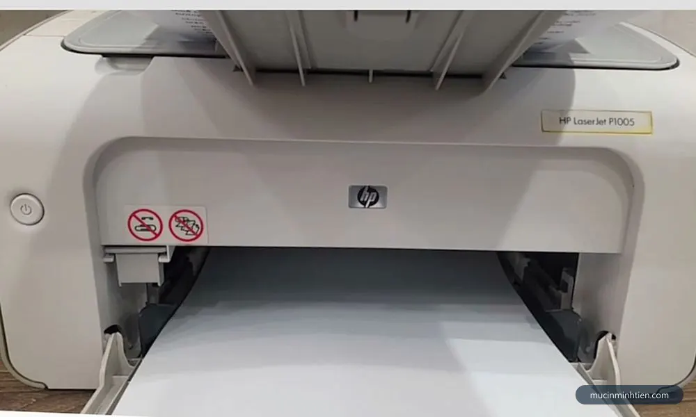
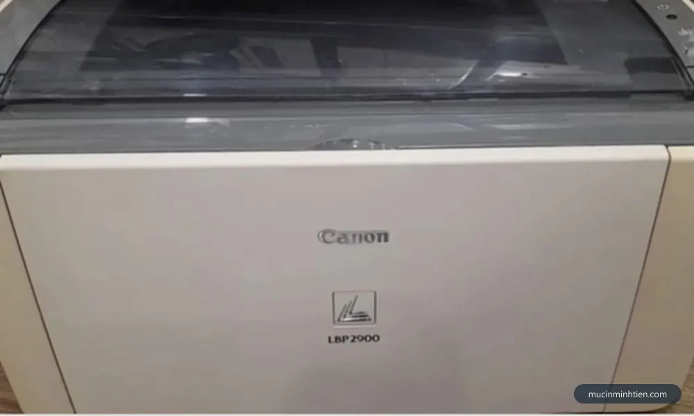
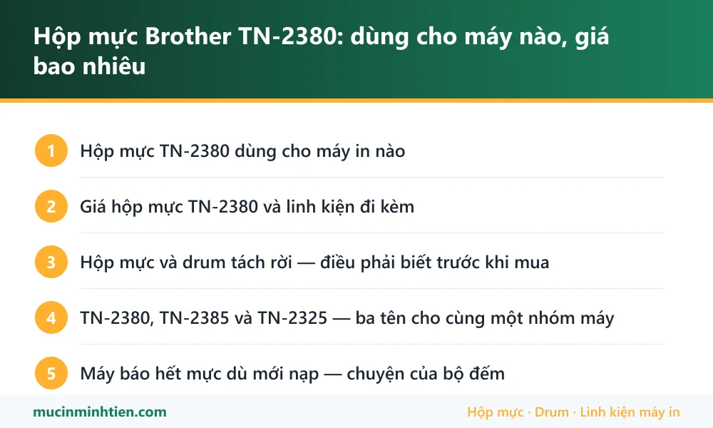

Hộp mực Brother TN-2380: dùng cho máy nào, giá bao nhiêu

Hộp mực Brother TN-2380 dùng cho HL-L2321D, HL-L2361DN, HL-L2366DW, MFC-L2701D và các máy cùng khung, in khoảng 2.600 trang ở độ phủ 5%. Điểm khác biệt lớn nhất so với máy HP và Canon cùng tầm: dòng này <strong>tách rời hộp mực và drum</strong>, nên khi bản in xuống cấp phải xác định đúng bộ phận nào hỏng trước khi mua.
Hộp mực TN-2380 dùng cho máy in nào
| Dòng máy | Model cụ thể | Ghi chú |
|---|---|---|
| Brother HL | HL-L2321D, HL-L2361DN, HL-L2366DW | Dòng in đơn năng, bản DN có mạng, bản DW có Wi-Fi |
| Brother MFC | MFC-L2701D, MFC-L2701DW, MFC-L2716DW | Bản đa năng có scan, copy và fax |
| Brother DCP | DCP-L2520D, DCP-L2540DW | Bản đa năng không fax |
| Brother HL đời cùng khung | HL-L2320D, HL-L2340DW, HL-L2360DN | Cùng hệ hộp mực và drum, tên gọi khác theo thị trường |

Giá hộp mực TN-2380 và linh kiện đi kèm
Bảng dưới là hàng đang có tại kho 77 Bắc Hải, Phường Diên Hồng, TP.HCM, giá tham khảo cho khách lẻ. Đây là giá thật trong bảng giá công khai, không phải giá quảng cáo.
| Sản phẩm | Nhóm | Giá tham khảo |
|---|---|---|
| Combo 2 cái Phôi hộp mực Brother 2385 ( phôi 1 nước ) - Phôi 2385 | Hộp mực & mực in máy in | 150.000 đ |
| Hộp mực Brother RT 2385 / 2325 HL 2321D, 2361DN, 2366DW, MFC 2701D, 2300D, 2340DW, 2360D/ 2520D - RT 2385 | Hộp mực & mực in máy in | 150.000 đ |
| Hộp mực máy in Brother TN2385/ TN2325 - Hộp mực máy in Brother TN2385/ TN2325 | Hộp mực & mực in máy in | 150.000 đ |
| Hộp mực Brother TN-2380 chính hãng — Minh Tiến | Hộp mực & mực in máy in | 320.000 đ |
| Trống mực drum Brother 2385-2361-2701 - drum 2385 | Drum / Trống máy in | 60.000 đ |
| Cụm drum Brother DR 2385 dùng cho hộp mực Brother HL-L2320D/ 2321D/ 2340DW/ 2360DN/ 2361dn/ 2365DW/ 2366dw - cụm drum 2385 | Drum / Trống máy in | 170.000 đ |
| Gạt mực máy in Brother HL 2385 , 2300, 2320, 2340, 2361, 2365, 2380, MFC 2700, 2701, 2702, 2703, 2720, 2740 - gạt 2240 | Gạt mực | 25.000 đ |
| Lô ép dùng cho Brother 2385, HL 2300, 2321, 2340, 2361, 2365, 2380, MFC 2700, 2701, 2703, 2720, 2740 - lô ép 2385 | Lô sấy, lô ép & linh kiện sấy | 120.000 đ |
| Trục từ-trục sạc dùng cho máy in Brother 2385-2361-2321D-2701D - Từ 2385 | Trục từ | 50.000 đ |
Không thấy mã cần tìm? Dùng công cụ tra cứu theo model máy hoặc xem bảng giá đầy đủ 773 mã.

Hộp mực và drum tách rời — điều phải biết trước khi mua
Đây là khác biệt lớn nhất giữa dòng Brother này với HP hay Canon cùng tầm giá, và cũng là chỗ người dùng hay mua nhầm.
Trên máy HP 1102 hay Canon 2900, drum nằm luôn trong hộp mực nên thay hộp là thay cả cụm. Brother tách làm hai: hộp mực TN-2380 chỉ chứa mực, còn drum là cụm DR-2385 riêng, dùng được qua nhiều lần thay hộp mực.
Cách phân biệt khi bản in xuống cấp:
- Bản in mờ dần đều, máy báo sắp hết mực — hết mực, thay hoặc nạp hộp mực TN-2380.
- Chấm đen lặp lại đều đặn, hoặc sọc dọc cố định — drum đã tới tuổi, thay cụm drum chứ không phải thay mực.
- Máy báo Drum End Soon — bộ đếm drum đã đầy, xem cách xử lý ở bài lỗi Drum End Soon Brother.
Ưu điểm của thiết kế này là chi phí dài hạn thấp hơn, vì mỗi lần hết mực chỉ phải mua phần mực. Nhược điểm là phải biết mình đang cần gì trước khi mua.
TN-2380, TN-2385 và TN-2325 — ba tên cho cùng một nhóm máy
Ra tiệm hỏi mực cho HL-L2321D, bạn có thể được đưa hộp ghi TN-2380, TN-2385 hoặc TN-2325, và cả ba đều lắp vừa. Sự khác biệt nằm ở thị trường phát hành và dung lượng mực ghi trên hộp, không phải ở thiết kế phôi.
Trong đó TN-2380 thuộc nhóm dung lượng cao, in được nhiều trang hơn bản tiêu chuẩn cùng nhóm. Với văn phòng in nhiều, bản dung lượng cao gần như luôn rẻ hơn tính theo chi phí mỗi trang, đồng thời đỡ công thay hộp.
Cách mua không nhầm: nói tên model máy in trước, mã hộp mực sau. Người bán tra theo model là ra đúng nhóm, còn nói mỗi mã thì dễ lệch giữa các thị trường. Hoặc dùng công cụ tra hộp mực theo model để đối chiếu trước.
Máy báo hết mực dù mới nạp — chuyện của bộ đếm
Dòng Brother này đếm số trang đã in để suy ra lượng mực còn lại, không đo mực thật trong hộp. Nạp mực xong mà không đặt lại bộ đếm thì máy vẫn báo hết và có thể khóa không cho in.
Đây là lý do rất nhiều người nạp mực xong tưởng thợ làm hỏng máy. Cách đặt lại khác nhau giữa dòng có màn hình và dòng chỉ có đèn, quy trình đầy đủ có ở bài cách reset máy in Brother báo hết mực.
Lưu ý thêm: hộp mực và drum có hai bộ đếm riêng. Đặt lại bộ đếm mực không xóa cảnh báo drum và ngược lại — đây là chỗ hay bị làm nhầm.

Nên mua hộp mực mới hay nạp lại TN-2380
Với TN-2380, cả ba phương án đều dùng được và chênh lệch chi phí khá rõ.
Hộp mực chính hãng cho bản in ổn định nhất, hợp với máy dùng cho công việc quan trọng hoặc in khối lượng lớn. Hộp dựng lại rẻ hơn nhiều và với dòng này chất lượng khá ổn định vì phôi phổ biến, linh kiện rời sẵn. Nạp lại hộp cũ là phương án rẻ nhất, nhưng bắt buộc phải đặt lại bộ đếm sau khi nạp, và nên thay gạt mực cùng lúc.
Một lưu ý riêng của dòng này: vì drum tách rời nên đừng đổ lỗi cho hộp mực khi bản in có chấm đen lặp lại hoặc sọc cố định — đó là dấu hiệu drum, và thay mực bao nhiêu lần cũng không hết.

Câu hỏi thường gặp về hộp mực TN-2380
TN-2380 dùng cho máy Brother nào?
TN-2380 và TN-2385 khác nhau thế nào?
Vì sao máy Brother báo hết mực dù vừa nạp?
Bản in có chấm đen lặp lại thì thay mực hay thay drum?
Drum DR-2385 dùng được bao lâu?
Nạp mực TN-2380 có bền không?
Bài viết liên quan
- Cách reset máy in Brother báo hết mực và reset drum
- Lỗi Drum End Soon máy in Brother và cách reset drum
- Reset drum Brother DCP-B7535DW: cách làm đúng
- Máy in bị sọc ngang: 6 nguyên nhân và cách khắc phục
- Hộp mực 12A: dùng cho máy nào, giá bao nhiêu
- Hộp mực 35A: dùng cho máy nào, giá bao nhiêu
- Tra hộp mực và linh kiện theo model máy in
- Nạp mực máy in tận nơi TP.HCM từ 80.000đ